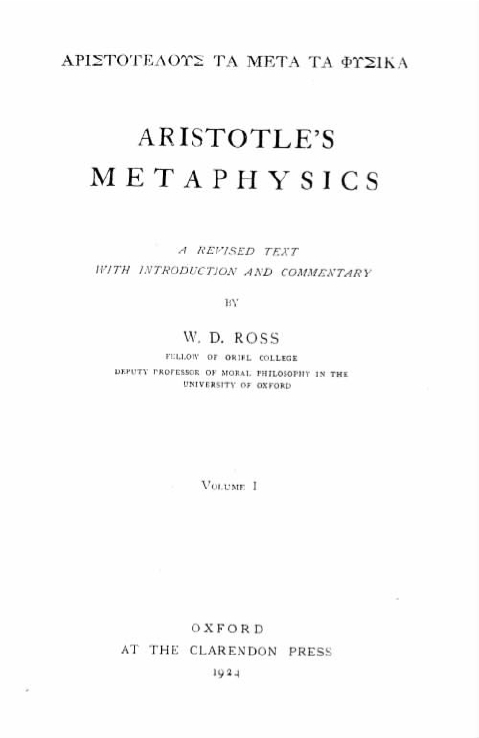
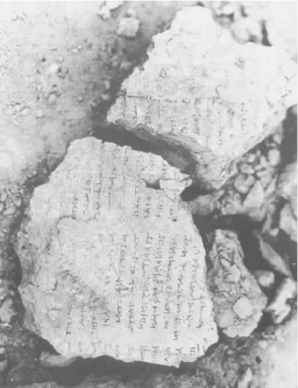

科学是讨论真实事物的。这就是科学是一种知识而非幻想的原因。可是什么样的事物是真实的呢？科学必须关注的基本物质是什么呢？这就是本体论要研究的、亚里士多德予以极大关注的问题。他讨论本体论的一篇论文《范畴》写得相当清楚；但是他的本体论思想大部分体现在《形而上学》和那部模糊著作的一些最模糊部分中。
“现在和过去一直被提出并一直困扰人们的问题是：什么是存在？也就是说，什么是物质？”在简述亚里士多德对这个问题的答案之前，我们必须就这个问题本身进行提问。亚里士多德追求的是什么？他说的“物质”是什么意思？这个初步问题最好通过迂回的方式来解答。
《范畴》关注的是谓项的分类（亚里士多德使用katêgoria来表示“谓项”）。考虑一下某个特定的主题，比如说亚里士多德本人吧。我们能问各种各样有关他的问题：他是什么 ？——他是人，是动物，等等。他的特质 是什么？——他是脸色苍白的、聪明的，等等。他的身材如何？——他五英尺十英寸高，体重十点八英石 [1] 。他与其他事物是何种关系 ？——他是尼各马可的儿子、皮提亚斯的丈夫。他在哪里 ？——他在吕克昂……等等。不同类型的问题可由不同类型的谓项来恰当回答。“身材如何”这个问题涉及到表示数量 的谓项；“何种关系”问题涉及到关系 谓项，如此等等。亚里士多德认为，这样的谓项有十类；他还描述了每类谓项的特性。例如，“数量的真正特性是它能被称做相等或不相等”，再比如，“仅就质量而言，指的是事物被称为相像或不相像”。亚里士多德对所有分类的叙述并不同样清楚，他对什么归属于哪一类的讨论有些令人困惑。此外，人们还不清楚亚里士多德为何把谓项分成十 类。（除了在《范畴》里，他很少使用全部的十类谓项；并且他也许不太执着于是否正好是十类。）但总的一点是很清楚的：谓项分为不同的类。

图11“人天生渴望认识”：这是亚里士多德在《形而上学》里乐观的开卷语。本图是戴维·罗斯爵士汇编的亚里士多德《形而上学》的标题页，该书由牛津大学出版社于1924年首次出版。
亚里士多德对谓项的分类现在被称做“范畴”，“范畴”这一术语的含义由被归类的事物转变为这些事物被归入的类；所以，谈论“亚里士多德的十个范畴”是很正常的。更重要的是，范畴通常指的是“存在”的范畴——事实上，亚里士多德本人有时会称它们为“存在事物的类型”。为何会出现从谓项的类向存在物的类的转变呢？假定谓项“健康的”对亚里士多德的描述是真实的：那么“健康”就是亚里士多德的一个特质，并且定然存在一种叫做健康的事物。总的说来，如果一个谓项对某物的表述为真，那么该事物就具有某种特征——与谓项一致的特征。并且与谓项相一致的事物或特征本身，又可以用一种与谓项分类方法一样的方式进行分类。或者更确切地说，只有一种分类：在对谓项进行分类时，我们同时对特征进行了分类；当我们说在“亚里士多德是健康的”这个句子中描述亚里士多德的谓项是一个质量谓项，或在“亚里士多德在吕克昂里”这个句子中描述他的谓项是一个地点谓项时，我们其实在说健康是一种质量或者说吕克昂是一个地点。事物与谓项一样，分为不同的类；并且，如果谓项有十类或十个范畴，就有十类或十个范畴的事物。
回答“某物是什么？”这一问题的谓项属于亚里士多德称之为“实体”的范畴；属于该范畴内的事物就是实体物质。实体的分类特别重要，因为这一分类是第一位的。为了理解实体的第一位重要性，我们得简要地看一看对亚里士多德整个思想具有核心意义的一个概念。
亚里士多德注意到某些希腊词语是模棱两可的。比如“sharp”这个词，在希腊语中和在英语中一样，都可描述刀和声音；很明显，描述声音很sharp（尖锐）是一回事，描述刀很sharp（锋利）则又是一回事。许多模棱两可的情况很容易被发现：它们可造成双关，但它们并不造成理解上的困惑。但是，模棱两可的情况有时表达的意思更为微妙，有时会影响具有哲学意义的术语。亚里士多德认为哲学里的大部分重要术语都是模棱两可的。在《智者的驳辩》中，他用了不少时间来阐释和解答基于词义模糊性之上的诡辩难题；《形而上学》第五卷——有时被称为亚里士多德哲学词汇表——就是一组短文，讨论许多哲学术语的不同含义。“某物被称为一种原因的一种条件是……，另一种条件是……”；“如果……或如果……某物就被称为是必然的”；等等，诸如此类，亚里士多德自己的哲学体系里的许多核心术语也有讨论。
其中一个被亚里士多德视为语义模糊的术语是“存在”（being）或“存在物”（existent）。《形而上学》第五卷第七章就是用来阐释“存在”的；第七卷的开头就说：“就像我们在前面讨论语义模糊性时描述的那样，事物据说具有多重意思。因为存在表明一个事物是什么（也就是说，某人或某事如此这般）以及以这种方式表述的每一个其他事物，或其他事物的量或数量。”至少，有多少种存在的范畴就有多少种“存在”意义。
一些语义模糊仅仅是“偶然的同音异义”现象——就像希腊语单词kleis既表示“门闩”，又表示“锁骨”。亚里士多德并不是想说，kleis同时意指“门闩”和“锁骨”是一种偶然（那很明显是错误的，许多语义模糊都可以用某种大致的相似性来加以解释）。他的意思是，该词的两个用法之间没有意义上的联系：你可以在毫不知道另外一个词义的情况下使用其中的一个意义。但是，并非所有的语义模糊都是这种意义上的“偶然的同音异义”，并且，尤其是“存在”（be）和“存在”（exist）这两个词并不代表一种偶然的同音异义：“按一般说法，事物以许多方式存在，但这仅仅是在描述某一事物或某一单个性质，不是同音异义。”（“不是同音异义”在此是指“不是偶然的同音异义”。）亚里士多德用两个非哲学事例来解释他头脑中的思考：
“健康”这个词的语义是模糊的。我们称各种各样的事物——人、矿泉疗养、食品——是健康的；但是乔治五世、博格诺里吉斯 [2] 和全麦维的健康不是一个意义上的健康。不过，“健康”的不同含义是相互关联的，这种相互关联是由以下事实决定的：它们指的都是某一事物，即健康。因此，说乔治五世是健康的指的是他拥有 健康；说博格诺里吉斯是健康的是因为它能带来 健康；说全麦维是健康的是因为它能维持 健康等等。“某种单个的特性”被用于解释，为何这些不同事物中每一种都是从不同的角度阐述健康的。
“医疗的”这个术语也是这样，它以类似的方式指向医学。根据亚里士多德的说法，“存在”或“存在物”也是如此。
就像健康之所以被称为健康是因为与健康有关，所有的事物之所以被称为存在（be）或存在（exist）是因为与实存物质有关。存在着颜色和尺寸、变革和破坏、地点和时间。但是颜色的存在是因为某种物质 有颜色，尺寸的存在是因为某种物质 具有大小，运动 的存在是因为某种物质在运动。非物质也存在，但它们是寄生性的——它们作为物质的变体或属性而存在。非物质的存在是因为存在的物质以一种或另一种方式发生了变体。但物质的存在不是寄生性的：物质的存在是第一位的；因为物质的存在不是 因为其他事物——非物质——的存在才得以实存。
与“健康”一样，“存在”这个术语是多样性的统一；正如“健康”一词指向健康，“存在”都指向实在物质。这就是实在作为第一位类别与其他存在范畴相关联的主要方式。
那么，成为一个实在意味着什么呢？实在谓项就是恰当地回答“那是什么”的谓项。人是一个实在；换言之，“人”是一个实在谓项，因为“他是人”就是对“亚里士多德是什么？”的恰当回答。但是，“那是什么？”这样的问题太不严密了。在《形而上学》第五卷里，亚里士多德又补充或增加了一项成为实在的不同标准：“事物以两种方式被称做实在：任何终极主体，不是说明其他事物（主体）的；以及任何可以分离的‘这个某某人（物）’。”在事物被称为实在的第二种方式中，串起了亚里士多德在思考这个问题时经常使用的两个概念：实在是“这个某某人（物）”，并且它又是“可以分离的”。
“这个某某人（物）”翻译自希腊语“tode ti”，一个很古怪的短语，亚里士多德在其他地方也未作解释。他头脑中所考虑的也许可以表述如下：实在是我们可以用指示短语“这个 某某人（物）”来谈论的事物，是可以被挑选出来、加以识别并分成个体的事物。比如，苏格拉底就是“这个某某人”的一个例子；因为他是这个人 ——一个我们能挑选出来进行识别的个体。
但是，对于苏格拉底的面色，比如苍白，情况又是怎样？我们不能用短语“这个苍白”来指称吗？这个苍白不是我们能识别和重新识别的事物吗？亚里士多德认为“这种特定的苍白是在一个主体，即物体之上（因为所有的颜色都附着在物体上）”，他用“这种特定的苍白”似乎是指“这个苍白”，苍白这种属性的一个个体实例。但是，即使这个苍白是一个个体事物，也并不表明我们必须承认它是一个实在。因为实在不仅是“这个某某人（物）”，而且还是“可以分离的”。这里的可分离性又是什么呢？
看来，苏格拉底可以没有苍白而存在，但苏格拉底的苍白不能在没有苏格拉底的情况下存在。苏格拉底可以躺在沙滩上，因此不再脸色苍白；他没有苍白地在那里——但是他的苍白却不能没有他而独自在那里。苏格拉底可以脱离苍白。苏格拉底的苍白却不能脱离苏格拉底。这也许就是亚里士多德所说的可分离性的部分内容，但是可能不是他要表示的全部意思。首先，苏格拉底可以停止脸色苍白，但他不能停止脸上的颜色；他可以脱离苍白，但他不能以同样的方式脱离颜色。
我们需要重提一下亚里士多德对存在的模糊性的描述。我们已看到，一些事物是寄生在其他事物之上的：一个寄生物的存在，是因为与另一个存在物以某种方式相关联。在寄生和分离之间有一种联系：如果一个事物不是寄生的，那么它就是可分离的。苏格拉底可以与苍白分离，因为苏格拉底的存在不是为了让他的苍白以某种方式被改变；而苏格拉底的苍白不可与苏格拉底相分离，因为它的存在是为了某种其他事物，即苏格拉底变得苍白。苏格拉底可以脱离他的苍白。他还可脱离颜色，因为尽管他必须有某种这样或那样的颜色，但他的存在不是为了让颜色以某种方式被改变。总的说来，苏格拉底可脱离其他的一切事物：苏格拉底的存在不是为了让其他事物变得这样或那样。
那么，何谓实在呢？一个事物，当且仅当它既是一个个体［一个“这个某某人（物）”，能够由一个指示性短语指明的事物］，又是一个可分离的事物（非寄生的事物，其存在不是为了其他事物以某种方式进行改变）时，才是实在。
我们现在可以回到亚里士多德提出的那个永久问题上：什么样的事物才是真正的实在？我们不应指望从亚里士多德那里获得简单而又权威的答案（毕竟，他认为这个问题是个永久的谜），事实上，他试图给出的答案吞吞吐吐、难以理解。但是，有一两点相当清楚。亚里士多德认为，先辈们对这个问题已经暗示了许多不同的答案。一些人曾认为，像金、肉、土、水这样的物质是实在（他想到的主要是希腊最早时期的哲学家们，他们把注意焦点放在事物的材料组成上）。其他一些人认为，普通事物的终极组成部分就是实在（亚里士多德在此又想到古代原子论者的观点，他们设想的基本实体是细微的微粒）。然而，还有些思想家则提出数字是实在（毕达哥拉斯学派和柏拉图的一些追随者属于这一阵营）。最后，有些人认为，实在只能在某些抽象实体或一般概念中找到（柏拉图的形式教义就是这种理论的杰出代表）。粉笔、一组夸克微粒、质数、真理和美都是，或都曾被认为是构成实在的备选项。
亚里士多德否定了所有这些备选项。“很显然，在被认为是实在的事物中，大部分都关乎能力——动物的组成部分……土、火和空气。”我们也许会说，土的存在是为了让某些实在获得能力（在亚里士多德看来，土能让它们具有向下运动的能力或趋势）；火的存在是为某些实在加热、使之燃烧，然后有飘升的趋向。至于动物的组成部分，“所有这些都由它们的功能清楚地规定着；因为每个部分只有能执行其功能时才算名副其实——比如，眼睛只有能看事物才能称其为眼睛；并且不能看东西的眼睛只是一个同音异义的眼睛（比如，已死亡的眼睛或由石头做成的眼睛）”。眼睛就是能看东西的事物；眼睛的存在是为了让动物看见东西。
关于物质和动物的组成部分就说这么多。至于数字，他们很显然是非实体性的。只要有成组的三个事物，数字3就存在。数字本质上是事物的数量，尽管数字10与任何或每一组数量为十的事物不是一回事，可数字10的存在恰恰就在于存在着这样许多十个一组的实在。这至少是亚里士多德在《形而上学》最后两卷里提出的观点。

图12这是关于柏拉图形而上学的一则对话的残片，也许来自亚里士多德遗失的著作《论理念》。这段文字反写在一块泥巴上：泥巴吸收了莎草纸上的墨水，而莎草纸则腐烂掉了。这个残片是在阿富汗发现的——参见136页图解。
亚里士多德把驳斥的焦点大都放在对实在资格的第四个备选项上。柏拉图的形式理论是那时亚里士多德所熟悉的阐述最详细的本体论，那也是他在柏拉图学园里数年浸淫其中的一个理论。亚里士多德驳斥柏拉图的这个理论始见于一篇特殊的专题论述《论思想》之中，该文只保留下些许残片。他不断地攻击，提出一系列反对该理论的意见。许多论述涉及柏拉图观点的细节方面；不过，也有一些是关于总体方面的，这些论述对任何把真理和美这样的一般性物项看做实在的理论都同样有辩驳力。
亚里士多德认为，只要有某些实在是白色的，白色就存在。相反，柏拉图认为一个实在是白色的在于其享有白色。在亚里士多德看来，白色的事物要先于白色而存在，因为白色的存在仅仅是因为存在着白色物体。在柏拉图看来，白色先于白色事物而存在，因为白色事物的存在仅仅是因为它们享有白色。亚里士多德驳斥柏拉图观点的论说非常有力，但是它们不能说服坚定的柏拉图主义者——也很难看出这一争论该如何收场。
如果柏拉图主义选择其他三种方式来描述实在，亚里士多德又会说什么呢？亚里士多德提出反驳的实在是什么呢？答案是坚实而又符合常理的。第一种也是最明显的实在是动物和植物；在此之外我们还可以增加其他天体（比如太阳、月亮、星星）和人造物（桌子和椅子、锅和盘子）。总体说来，可感知的事物——中等尺寸的物体——是亚里士多德世界里的主要内容；很重要的是，他常常通过质疑除了可感知的实在外是否还存在任何实在，来提出自己的本体论问题。在亚里士多德看来，这些是基本现实，也是科学主要关注的内容。